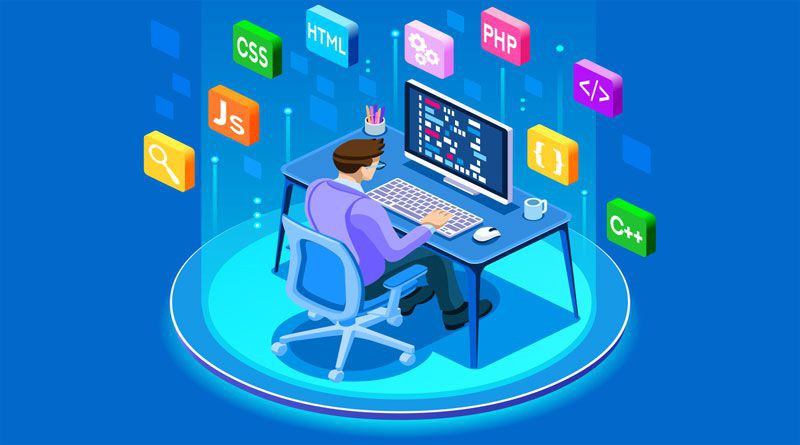

What is full stack Web developer?
A full-stack developer helps build and maintain both the front-end and the back-end of a website. Learn about full-stack developer skills, salary, and how you can become one.

A full-stack developer is a developer or engineer who can build both the front end and the back end of a website. The front end (the parts of a website a user sees and interacts with) and the back end (the behind-the-scenes data storage and processing) require different skill sets. Since full-stack developers are involved with all aspects of the development process, they must have expertise in both. A full-stack developer can work in-house or at a computer development company that engineers websites, software, and other components for other businesses.
What does a full-stack developer do?
Full-stack developers design and create websites and applications for various platforms. A full-stack developer’s job description might include the following:
Develop and maintain web services and interfaces
Contribute to front-end and back-end development processes
Build new product features or APIs
Perform tests, troubleshoot software, and fix bugs
Collaborate with other departments on projects and sprints
The world of full-stack development is large, and many new and evolving technologies continually push the limits of what a full-stack developer can create. Staying on top of cutting-edge technology and techniques in the full-stack development field is one of the many exciting aspects of working in this role.